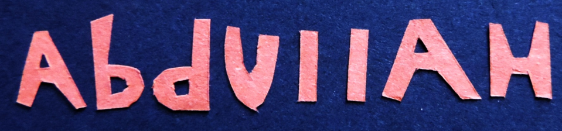

My Film Work.
Bridging the gap between conceptual art and client collaborations, these projects highlight my dedication to visual storytelling. For me, motion is a vivid extension of my creative identity, and inspirations.
I made this video for Zain Bhikhas 2025 Album "Love & Loss" this song speaks to the sacred space between remembering and healing - where tears meet gratitude, and absence meets faith. It is a reminder that every soul leaves fingerprints on our hearts and that love does not end when a life does.
A showcase of my Cardboard model Hasselblad medium format SLR. Its my first project from a year long Hiatus that I fell into since 2024